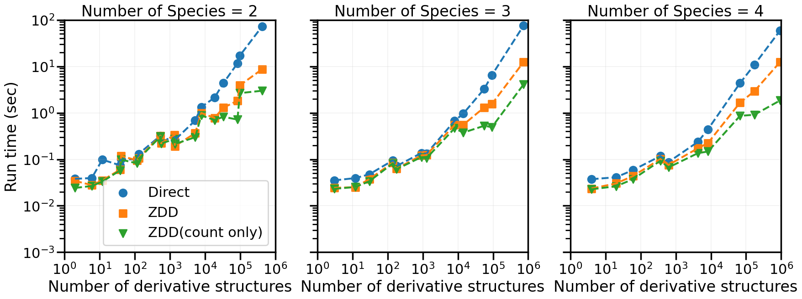

Performance comparison between direct and ZDD methods#
This example shows computational times for enumerating fcc derivative structures by the direct and ZDD methods.
Import modules and prepare helper functions#
[1]:
from time import time
import matplotlib.pyplot as plt
import seaborn as sns
import pandas as pd
from dsenum import StructureEnumerator, ZddStructureEnumerator
from dsenum.utils import get_lattice
%matplotlib inline
[2]:
from dsenum import __version__
print(f"dsenum {__version__}")
dsenum 0.3.16.dev19+gc2b1184.d20220615
[3]:
# Plotting settings
sns.set_context('poster')
plt.rcParams['grid.linewidth'] = 0.2
[4]:
def timer(f):
def wrapper(*args, **kwargs):
start = time()
ret = f(*args, **kwargs)
elapsed = time() - start
return elapsed, ret
return wrapper
@timer
def direct_enumeration(aristo, index, num_types):
zse = StructureEnumerator(
aristo,
index,
num_types,
color_exchange=False,
remove_incomplete=False,
remove_superperiodic=False,
verbose=False,
)
list_dstructs = zse.generate(output="poscar")
return len(list_dstructs)
@timer
def zdd_enumeration(aristo, index, num_types, count=False):
zse = ZddStructureEnumerator(
aristo,
index,
num_types,
remove_incomplete=False,
remove_superperiodic=False,
verbose=False,
)
if count:
return zse.count()
else:
return len(zse.generate(output="poscar"))
Measure computational time#
[5]:
aristo = get_lattice('fcc')
num_types_and_max_index = [(2, 18), (3, 12), (4, 10)]
all_datum = []
for num_types, max_index in num_types_and_max_index:
for index in range(1, max_index + 1):
zdd_elapsed, count1 = zdd_enumeration(aristo, index, num_types, count=False)
zdd_count_elapsed, count1 = zdd_enumeration(aristo, index, num_types, count=True)
direct_elapsed, count2 = direct_enumeration(aristo, index, num_types)
assert count1 == count2
data = {
"index": index,
"num_types": num_types,
"count": count1,
"zdd_sec": zdd_elapsed,
"zdd_count_sec": zdd_count_elapsed,
"direct_sec": direct_elapsed,
}
all_datum.append(data)
df = pd.DataFrame(all_datum)
Plot#
[6]:
def plotter(fig, ax, df):
for i, num_types in enumerate([2, 3, 4]):
df_tmp = df[(df["count"] > 0) & (df["num_types"] == num_types)].sort_values(by=["count"])
list_count = df_tmp["count"]
list_direct_sec = df_tmp["direct_sec"]
list_zdd_sec = df_tmp["zdd_sec"]
list_zdd_count_sec = df_tmp["zdd_count_sec"]
ax[i].scatter(list_count, list_direct_sec, label="Direct", color="C0", marker="o")
ax[i].plot(list_count, list_direct_sec, color="C0", linestyle="--")
ax[i].scatter(list_count, list_zdd_sec, label="ZDD", color="C1", marker="s")
ax[i].plot(list_count, list_zdd_sec, color="C1", linestyle="--")
ax[i].scatter(list_count, list_zdd_count_sec, label="ZDD(count only)", color="C2", marker="v")
ax[i].plot(list_count, list_zdd_count_sec, color="C2", linestyle="--")
ax[i].set_xscale("log")
ax[i].set_xlabel("Number of derivative structures")
ax[i].set_title(f"Number of Species = {num_types}")
ax[i].grid()
ax[0].set_ylabel("Run time (sec)")
ax[0].set_yscale("log")
ax[0].legend()
yticks = [10**i for i in range(-3, 2 + 1)]
ax[0].set_yticks(yticks)
ax[0].set_ylim(min(yticks), max(yticks))
xticks = [10**i for i in range(0, 6 + 1)]
ax[0].set_xticks(xticks)
ax[0].set_xlim(min(xticks), max(xticks))
return fig, ax
fig, ax = plt.subplots(1, 3, figsize=(6.75 * 3, 6.75), dpi=100,
sharex=True, sharey=True)
fig, ax = plotter(fig, ax, df)

[ ]: